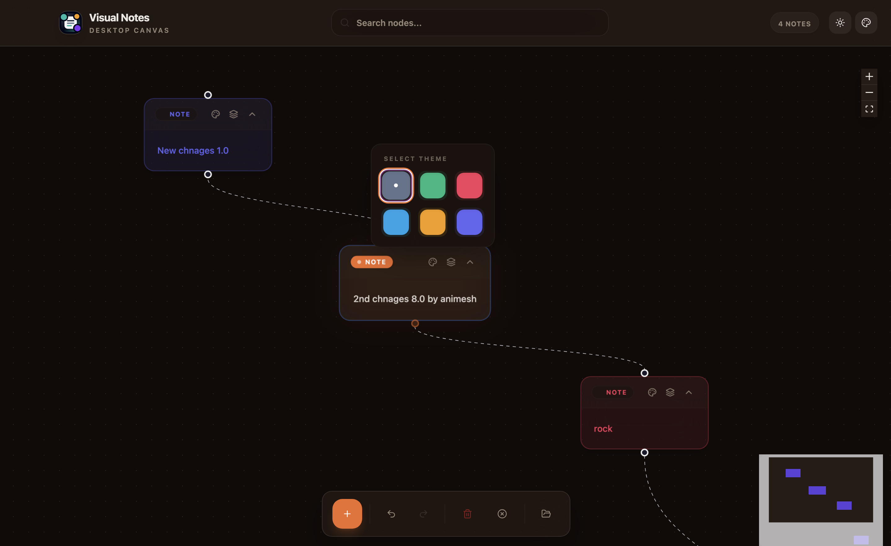
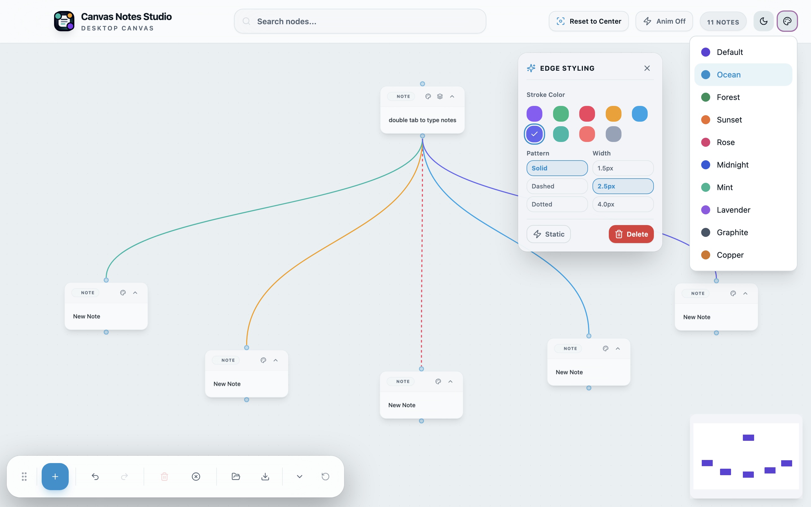
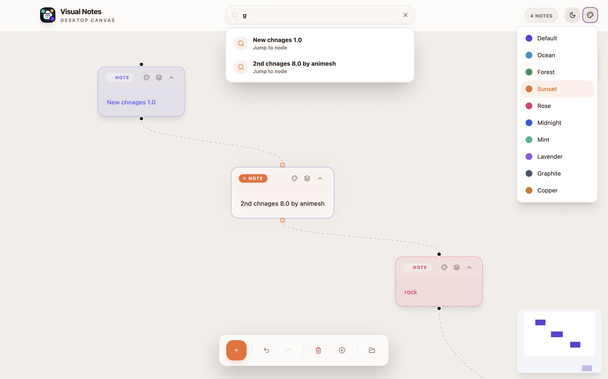
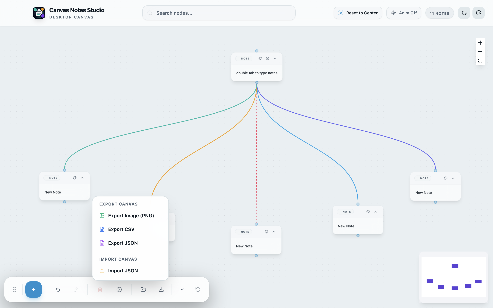

The Canvas-Based Editor for
Visual Thinking & Image AI
Connect ideas bi-directionally on an infinite interactive graph canvas. Transform notes, complex diagrams, and visual images into an interconnected knowledge network.
Turn fragmented thoughts into structured clarity
Experience fluid canvas navigation, Markdown intelligence, and native Mac performance.
Bi-Directional Graph Network
Visually link notes, concepts, and images. Watch your personal knowledge base expand as an organic graph network.
Full Markdown & Code Highlight
Write freely with inline Markdown syntax, code block formatting, nested lists, tags, and mathematical equations.
Infinite Zoom Canvas
Pan and zoom effortlessly across thousands of note nodes with fluid 60FPS Metal GPU accelerated performance.
100% Offline & Private
Your notes and diagrams stay securely on your local Mac disk. Complete data privacy with zero compulsory cloud login.
Visual Image Intelligence
Drop images directly onto your canvas to extract key entity relationships, bounding boxes, and OCR text notes.
Flexible Export Formats
Export your full workspace anytime into standard Markdown archives, raw JSON schemas, or high-resolution PNG images.
Designed for focus, clarity & depth
Explore the macOS workspace across canvas graphs, image analysis, and note management.
Infinite Canvas with Node Connections
Map your thoughts seamlessly. Organize notes as visual cards connected with bi-directional links, tags, and custom color categories.
- Dynamic node dragging & snapping
- Bi-directional link tracking
- Color-coded topic clusters

Extract Knowledge from Diagrams & Images
Analyze architecture diagrams, whiteboards, or flowcharts directly on your canvas. Extract text, identify concepts, and link them to your notes.
- Automated entity & bounding box detection
- Instant OCR text conversion
- Direct canvas node insertion

Interactive Node Network View
Zoom out to reveal the full map of your mind. Uncover hidden connections between project research, meeting logs, and technical specs.
- Interactive force-directed graph rendering
- Instant search & node filtering
- Tag relationship mapping

Rich Markdown Writing Environment
Enjoy a clean, distraction-free writing experience with full Markdown syntax support, inline media embeds, and instant preview side-by-side.
- Syntax highlighting for 30+ languages
- LaTeX math formula rendering
- Instant auto-save & versioning

Get Canvas Notes Studio for macOS & Windows
Available natively for Apple Silicon & Intel Macs, and Windows 10/11 PCs.
System Specs & Platform Support
macOS App Store Edition
- Operating System: macOS 11.0 (Big Sur), macOS 12, 13, 14, or 15+
- Processor: Apple Silicon (M1/M2/M3/M4) & Intel Core i5/i7/i9
- RAM: 4 GB RAM minimum
- App Store ID: 6794408320
Windows Store Edition
- Status: Live on Microsoft Store
- Target OS: Windows 10 (1809+) / Windows 11
- Architecture: x64 (64-bit)
- Store Product ID: 9NG907Z8HK4F
- View on Microsoft Store →